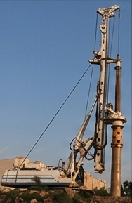
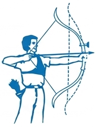
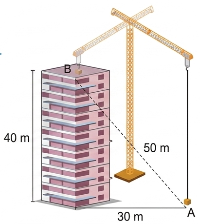
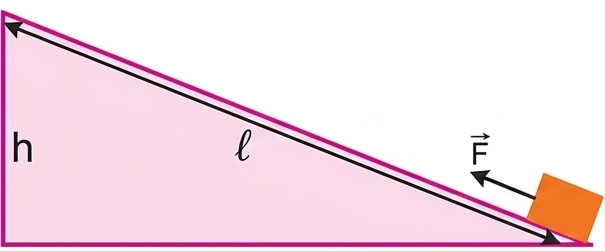

Chúng ta đã biết động năng của một vật là năng lượng mà vật có được do chuyển động.
Một vật có khối lượng \( m \) đang chuyển động với tốc độ \( v \) thì động năng là:
Trong hệ đơn vị SI, đơn vị động năng là jun (J).
Qua các ví dụ về năng lượng sóng, chuyển động của thiên thạch, chuyển động của mũi tên trong phần câu hỏi bên, ta thấy vật đang chuyển động có khả năng thực hiện công. Ta nói rằng vật đó mang năng lượng dưới dạng động năng.
Hình 25.1. Sóng thần
Hình 25.2. Hố lõm do thiên thạch gây ra
1. Tồn tại dưới dạng động năng. Sóng thần có tốc độ và khối lượng nước di chuyển khổng lồ nên động năng rất lớn. Chỉ tàn phá khi xô vào vật cản vì khi đó động năng chuyển hóa thành công cơ học phá hủy vật.
2. Dưới dạng động năng. Năng lượng thiên thạch cực lớn vì tốc độ bay của nó rất cao. Khi va vào Trái Đất, động năng chuyển hóa thành nhiệt năng (tạo hố sâu, bốc cháy) và cơ năng phá hủy.
3. Vận động viên lướt sóng di chuyển cùng chiều và tốc độ xấp xỉ sóng, nên vận tốc tương đối bằng 0, không chịu lực tác động lớn.
4. Động năng mũi tên: \( W_d = \frac{1}{2} \cdot 0.048 \cdot 10^2 = 2.4 \text{ J} \).
Một vận động viên quần vợt thực hiện cú giao bóng kỉ lục, quả bóng đạt tới tốc độ \( 196 \text{ km/h} \). Biết khối lượng quả bóng là 60 g. Tính động năng của quả bóng.
Giải:
Động năng của quả bóng được tính theo công thức: \( W_d = \frac{1}{2} m \cdot v^2 \)
Thay số:
\[ W_d = \frac{1}{2} \cdot 0,06 \cdot \left( 196 \cdot 1000 \cdot \frac{1}{3600} \right)^2 \approx 89 \text{ J} \]
Xét một vật khối lượng \( m \) chuyển động thẳng biến đổi đều với gia tốc \( a \) từ trạng thái đứng yên dưới tác dụng của lực không đổi \( F \). Sau khi đi được quãng đường \( s \), vật đạt tốc độ \( v \) thì: \( v^2 = 2 \cdot a \cdot s \).
Vì \( a = \frac{F}{m} \) nên \( v^2 = \frac{2 \cdot F \cdot s}{m} \) và:
Như vậy, nếu ban đầu vật đứng yên thì động năng của vật có giá trị bằng công của lực tác dụng lên vật.
1. Khi chạm sàn, động năng của quả bóng chuyển hóa một phần thành năng lượng biến dạng đàn hồi, nhiệt năng và âm thanh.
2. Tốc độ đầu: \( v_0 = 5 \text{ km/h} = \frac{25}{18} \text{ m/s} \). Độ biến thiên động năng bằng công lực cản (ma sát):
\( 0 - \frac{1}{2} m v_0^2 = A_{ms} = - \mu m g s \)
\( \Rightarrow \mu = \frac{v_0^2}{2gs} = \frac{(\frac{25}{18})^2}{2 \cdot 9.8 \cdot 1} \approx 0.098 \)

Hình 25.3. Máy đóng cọc
Máy đóng cọc hoạt động như sau: Búa máy được nâng lên đến một độ cao nhất định rồi thả cho rơi xuống cọc cần đóng.
Chúng ta đã biết một vật đặt ở độ cao \( h \) so với mặt đất thì lưu trữ năng lượng dưới dạng thế năng. Vì thế năng này liên quan đến trọng lực nên được gọi là thế năng trọng trường (thường được gọi tắt là thế năng), với độ lớn được tính bằng công thức:
Đơn vị thế năng trọng trường là jun (J).
Độ lớn của thế năng trọng trường phụ thuộc vào việc chọn mốc tính độ cao. Thường người ta tính độ cao của các vật so với mặt đất được coi là có độ cao bằng 0.
Hình 25.5 mô tả một cuốn sách được đặt trên giá sách. Hãy so sánh thế năng của cuốn sách trong hai trường hợp: gốc thế năng là sàn nhà và gốc thế năng là mặt bàn.

Hình 25.5
Máy đóng cọc có đầu búa nặng 0,5 tấn, được nâng lên độ cao 10 m so với mặt đất. Tính thế năng của đầu búa. Lấy \( g = 9,8 \text{ m/s}^2 \).
Giải:
Thế năng của đầu búa được tính theo công thức:
\[ W_t = m \cdot g \cdot h = 500 \cdot 9,8 \cdot 10 = 49\,000 \text{ J} = 49 \text{ kJ} \]
Ngoài thế năng trọng trường còn có nhiều loại thế năng khác. Khi giương cung thì cánh cung bị biến dạng đàn hồi. Nếu người đó buông tay thì mũi tên sẽ bị dây cung đẩy đi xa.
Điều này chứng tỏ khi giương cung thì cánh cung bị biến dạng đã có năng lượng dự trữ để thực hiện công đẩy mũi tên đi. Năng lượng dự trữ này được gọi là thế năng đàn hồi.
Hình 25.4
Vì độ cao \( h \) phụ thuộc vào vị trí được chọn làm mốc nên thế năng cũng phụ thuộc vào vị trí được chọn làm mốc.
Trong trọng trường, hiệu thế năng giữa hai điểm chỉ phụ thuộc vào chênh lệch độ cao theo phương thẳng đứng mà không phụ thuộc vào khoảng cách giữa hai điểm.
Muốn đưa một vật có khối lượng \( m \) từ mặt đất lên một độ cao \( h \), ta phải tác dụng vào vật lực nâng \( F \) có độ lớn tối thiểu bằng trọng lượng \( P \) của vật. Công mà lực nâng \( F \) thực hiện là:
Vậy thế năng của vật ở độ cao h có độ lớn bằng công của lực dùng để nâng đều vật lên độ cao này.
Công trong trường hợp này được gọi là công của lực thế, nó không phụ thuộc vào độ lớn quãng đường đi được mà chỉ phụ thuộc vào sự chênh lệch độ cao của vị trí đầu và vị trí cuối.
1. Một chiếc cần cẩu xây dựng cẩu một khối vật liệu nặng 500 kg từ vị trí A ở mặt đất đến vị trí B của một tòa nhà cao tầng (Hình 25.6). Lấy \( g = 9,8 \text{ m/s}^2 \). Tính thế năng của khối vật liệu tại B và công mà cần cẩu đã thực hiện.
2. Hãy chứng minh có thể dùng một mặt phẳng nghiêng để đưa một vật lên cao với một lực nhỏ hơn trọng lượng của vật (Hình 25.7). Coi ma sát không đáng kể.

Hình 25.6

Hình 25.7
1. Dựa vào sơ đồ, độ cao của B so với mặt đất (A) là 40m. Thế năng tại B: \( W_t = mgh = 500 \cdot 9.8 \cdot 40 = 196\,000 \text{ J} \). Công mà cần cẩu thực hiện nâng đều vật đúng bằng độ biến thiên thế năng: \( A = W_t = 196\,000 \text{ J} \).
2. Theo định luật bảo toàn công (không ma sát), công kéo vật trên mặt phẳng nghiêng bằng công nâng thẳng đứng: \( F \cdot l = P \cdot h \Rightarrow F = P \cdot \frac{h}{l} \). Vì chiều dài mặt phẳng nghiêng \( l > h \) nên \( \frac{h}{l} < 1 \Rightarrow F < P \). Vậy lực kéo nhỏ hơn trọng lượng.
Giải thích được hoạt động của máy đóng cọc dựa trên sự chuyển hoá động năng và thế năng của vật.
Bài 1:
Một ô tô khối lượng 1000 kg đang chạy với vận tốc 10 m/s thì người lái xe đạp ga tăng tốc. Sau khi đi được 50 m, xe đạt vận tốc 20 m/s. Tính độ biến thiên động năng của ô tô và suy ra công của lực kéo động cơ (bỏ qua ma sát).
Giải:
Động năng lúc đầu: \( W_{d1} = \frac{1}{2}mv_1^2 = \frac{1}{2} \cdot 1000 \cdot 10^2 = 50\,000 \text{ J} \)
Động năng lúc sau: \( W_{d2} = \frac{1}{2}mv_2^2 = \frac{1}{2} \cdot 1000 \cdot 20^2 = 200\,000 \text{ J} \)
Độ biến thiên động năng: \( \Delta W_d = W_{d2} - W_{d1} = 200\,000 - 50\,000 = 150\,000 \text{ J} \)
Áp dụng định lý động năng, công của lực kéo bằng độ biến thiên động năng (do ma sát = 0):
\( A = \Delta W_d = 150\,000 \text{ J} \)
Bài 2:
Một vật nặng 500 g được thả rơi tự do từ đỉnh một tháp cao 20 m so với mặt đất. Lấy \( g = 10 \text{ m/s}^2 \). Chọn mặt đất làm mốc thế năng. Tính thế năng của vật tại vị trí bắt đầu rơi và khi rơi được nửa quãng đường.
Giải:
Khối lượng vật: \( m = 500 \text{ g} = 0,5 \text{ kg} \).
Tại đỉnh tháp (\( h_1 = 20 \text{ m} \)):
Thế năng: \( W_{t1} = mgh_1 = 0,5 \cdot 10 \cdot 20 = 100 \text{ J} \).
Khi rơi được nửa quãng đường (độ cao so với đất lúc này là \( h_2 = 10 \text{ m} \)):
Thế năng: \( W_{t2} = mgh_2 = 0,5 \cdot 10 \cdot 10 = 50 \text{ J} \).
Bài 3:
Để đưa một kiện hàng nặng 200 kg lên tầng 4 của một tòa nhà có độ cao 15 m so với mặt đất, người ta dùng một thang máy. Lấy \( g = 9,8 \text{ m/s}^2 \). Bỏ qua ma sát. Tính công tối thiểu của động cơ thang máy để thực hiện việc này.
Giải:
Để nâng vật lên cao, lực nâng của thang máy tối thiểu phải bằng trọng lượng của vật: \( F = P = mg \).
Công tối thiểu động cơ phải thực hiện đúng bằng độ tăng thế năng của kiện hàng:
\( A = W_t = mgh = 200 \cdot 9,8 \cdot 15 = 29\,400 \text{ J} \)